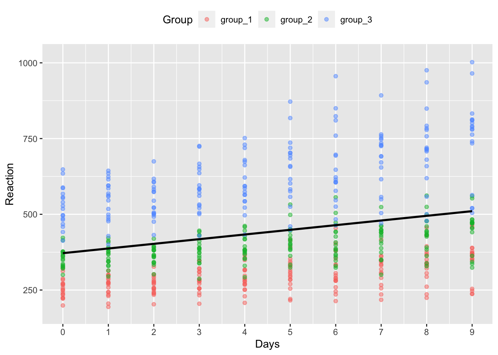
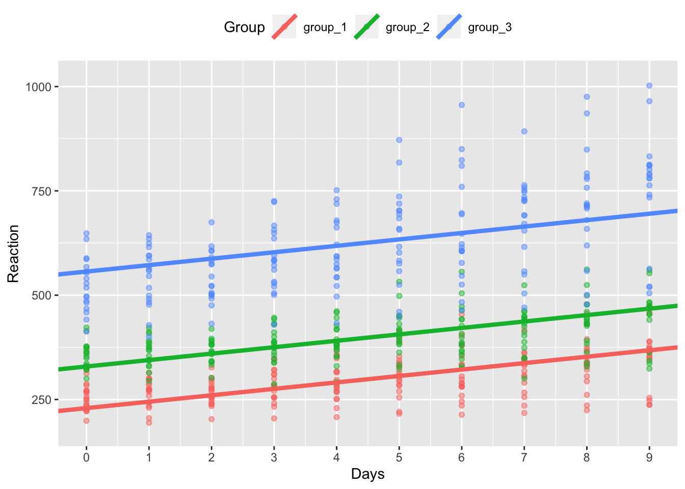
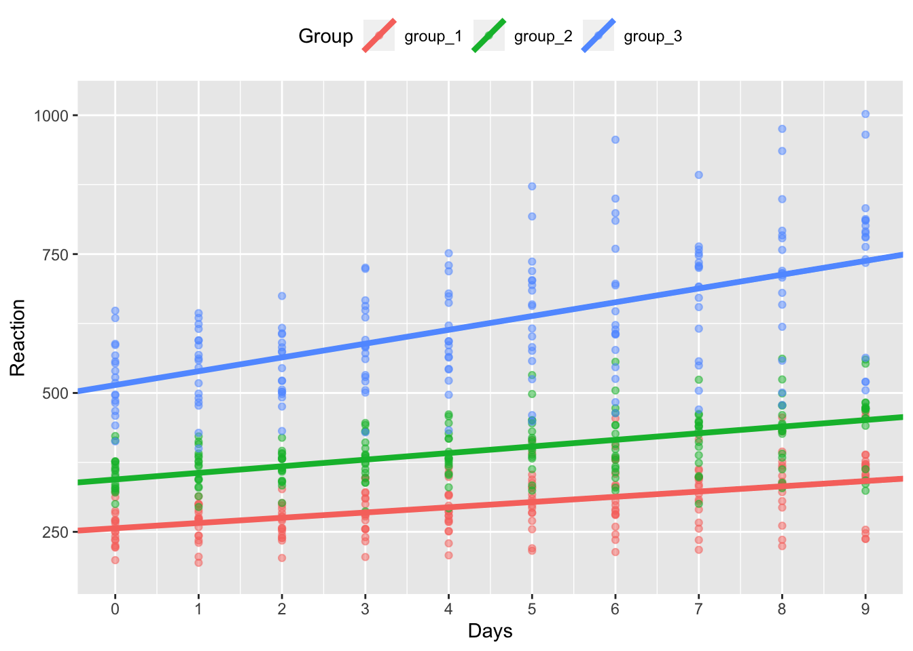
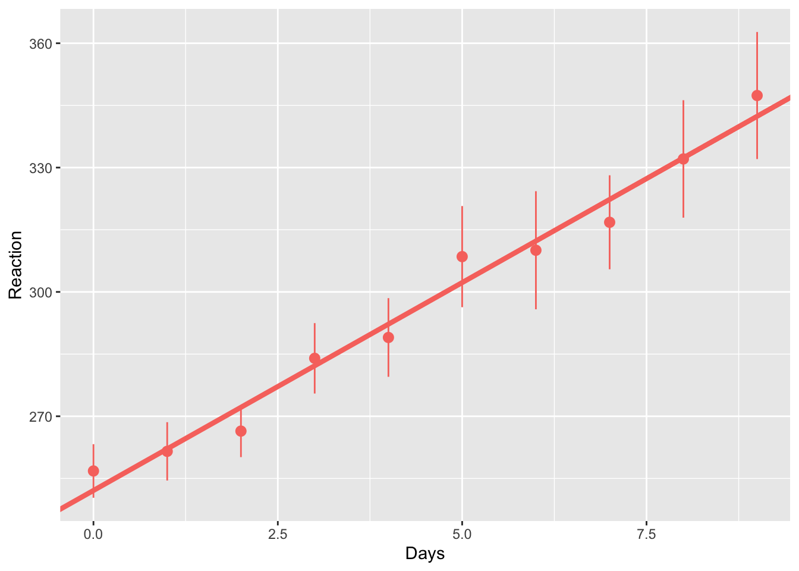
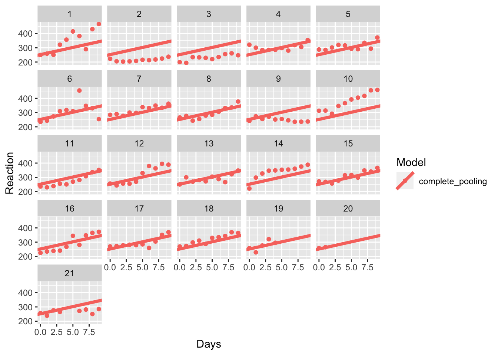
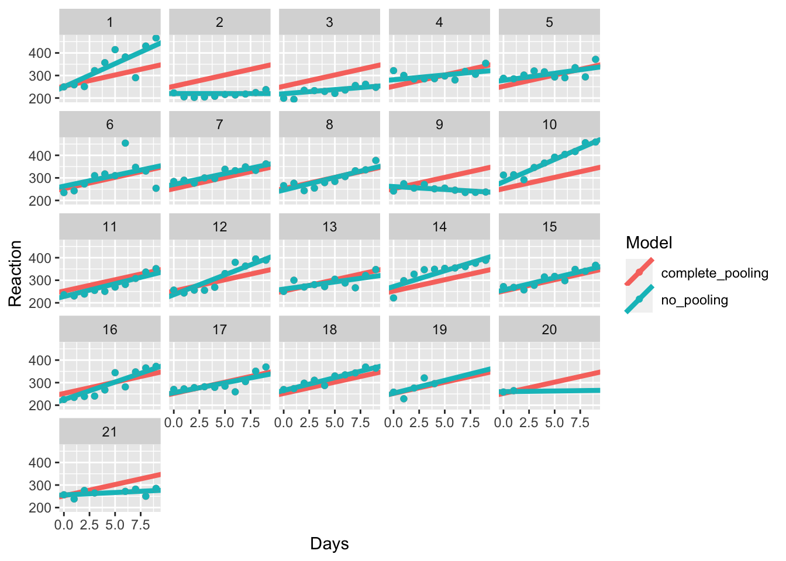
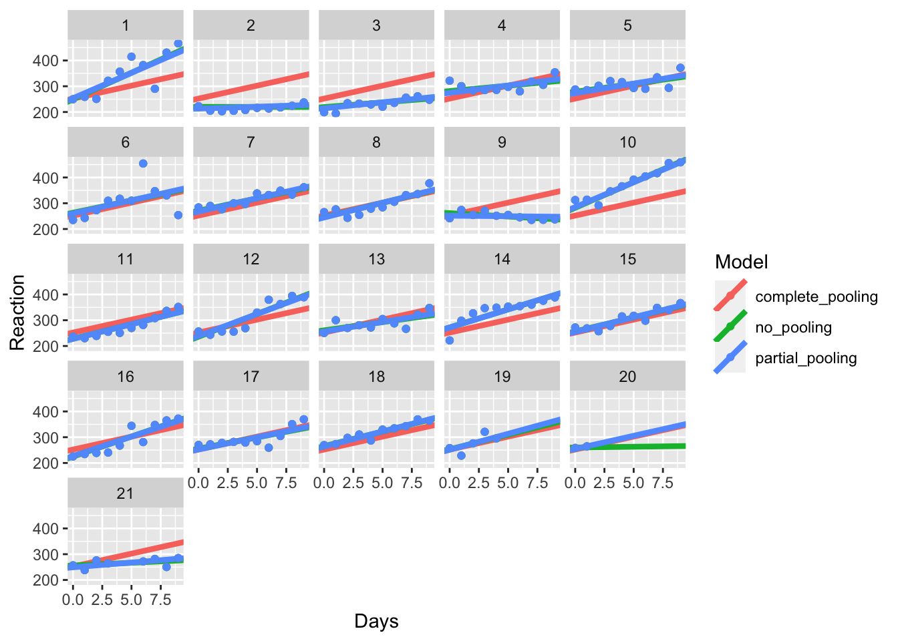
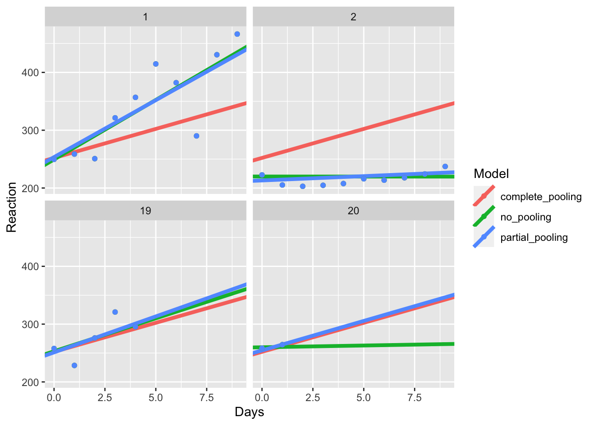

Chapter 9 Mixed Effects Models
In this session we’ll cover Linear/Hierarchical Mixed Effects Modelling. We’ll cover why you should use mixed effects modelling for your own analyses, how these models work, and how to define your models properly in R. Specifically, we’ll cover:
- Fixed and Random Effects
- Random Intercepts and Slopes
- Nested and Crossed Random Effects
- Partial-Pooling of Data
- Calculating p-values
- Generalised Mixed Effects Models
One nice introduction to mixed effects models is provided by Bodo Winter in two parts: part one and part two and you might want to check this out as further reading from this chapter.
9.1 Getting Started
As always, we first need to load the tidyverse set of package. However, for this chapter we also need the lme4 package. This package allows us to run mixed effects models in R using the lmer and glmer commands for linear mixed effects models and generalised linear mixed effects models respectively. These models are similar to linear models and generalised lienar models in that the first can take continuous, unbounded data, and the second takes bounded, discrete data.
# load packages
library(tidyverse)
library(lme4)Additionally, we’ll load the data set for this study. This is the inbuilt sleepstudy data set from lme4, but I’ve simulated 2 additional participants before removing a lot of their observations. This is to show you just how powerful mixed effects models are when we have missing data.
9.2 Why Mixed Effects Models
In all of the previous analyses we’ve used so far, our models have assumed that we have independence between cases in our data. However, this assumption is often violated, which can cause some serious problems when it comes to interpreting our tests.
Let’s assume we’re interested in language learning in children from monolinguial and bilingual backgrounds. We may decide to test how well children learn an artificial language by going to several schools and testing children in the same year group from different classes.
If we fit a traditional linear model to our data, we implicitly make the assumption that learning should be the same regardless of the class or school the child attends. Yet we know this is unlikely to be true; schools reflect the demographics of an area and the school ethos, and individual teachers may be better or worse at teaching linguistics to children. This means that children within the same school are likely to be more similar to one another than to children from different schools. Moreover, children within the class are likely to be more similar to one another than to children in different classes. In this way, our data should be nested such that children should be defined as part of a specific class in a specific school, and our models should reflect this ordering.
With mixed effects models, we can directly model this dependency in our data. Moreover, mixed effects models make fewer strict assumptions to other tests (Field, Miles, and Field (2012)), such as:
Homogeneity of regression slopes: Mixed effects models can directly model variability in slopes, so we needn’t make any assumption that slopes are similar across conditions (which is often untrue).
Assumption of independence: with independent-samples tests we often assume that data are unrelated to one-another. But again, this is often not the case; take learning over time. The same person provides multiple measurements at multiple time points. Mixed effects models can handle this well.
Complete data: Often, with traditional analyses you just have to throw away entire sources of data (e.g. participants) if one case (e.g. one trial) is missing. This isn’t the case with mixed effects models, where we can estimate missing data based on what we have available to us.
For these reasons, by default you should probably pick mixed effects models to model your data.
9.3 How Do Mixed Effects Models Work?
9.3.1 Fixed and Random Effects
So far, we’ve only talked about our parameter estimates from a linear model in terms of factors and levels. However, you can also consider the factors in your study in terms of whether they are fixed or random effects. Typically, a fixed effect will contain all possible levels of a factor in the experiment, while a random effect will be a random sample of possible levels of a factor. In effect, we can only generalise our fixed effects results to the levels within an experiment, but we can generalise from our random effects to levels beyond those that took part in our study.
Returning to our classroom example, if we tested languge learning in one of two conditions in students from different schools and and classes, our fixed effect would be the condition for the study. Hence, the random effects would be everything else we’d like to generalise to outside of our study. We probably want to generalise our results to all classes and all schools, so our random effects would be students within classes within schools.
In traditional models, you can say that all of the effects of interest, or the factors in the model, are defined as fixed effects. However, with mixed effects models, we can have both fixed and random effects in our model (hence mixed effects models).
To fit a mixed effects model, we simply define our fixed effects like we normally do for a linear model. However, there are different ways that we can define our random effects. Your choice of definition incorporates your belief of how the random effects work. Let’s explore how the way in which we define our random effects influences our model fit.
9.3.1.1 Fixed Intercept and Slope
To look at how mixed effects models work, we’ll use some toy data based on the sleepstudy data set from lme4. I made this quickly in another script, and you can load it using the code below.
This just makes three groups within our data, and we can look at this like conducting our study in three phases, with three different groups of people. As with the sleepstudy data set, this data set looks at the effect of days without sleep on reaction times.
sleep_groups <- read_csv("inputs/sleep_study_with_sim_groups.csv")## Rows: 540 Columns: 4
## ── Column specification ────────────────────────────────────────────────────────
## Delimiter: ","
## chr (1): Group
## dbl (3): Reaction, Days, Subject
##
## ℹ Use `spec()` to retrieve the full column specification for this data.
## ℹ Specify the column types or set `show_col_types = FALSE` to quiet this message.If we were to fit this data to a traditional linear model, and we ignored the fact that we have a random effect in our study (Group), then our linear model coefficients might look like this:
lm(Reaction ~ Days, data = sleep_groups)##
## Call:
## lm(formula = Reaction ~ Days, data = sleep_groups)
##
## Coefficients:
## (Intercept) Days
## 371.7 15.4That is, we would get an intercept of approximately 351.5 and a slope of approximately 10.3 which is used to define the relationship for days on reaction times across all participants. This type of model looks against the raw data for the study looks like this:
ggplot(data = sleep_groups, mapping = aes(x = Days, y = Reaction)) +
geom_point(na.rm = T, aes(col = Group), alpha = 0.5) +
geom_smooth(method = "lm", na.rm = T, col = "black", se = F) +
scale_y_continuous(limits = c(180, 1020)) +
scale_x_continuous(breaks = seq(1:10) - 1) +
theme(legend.position = "top")## `geom_smooth()` using formula 'y ~ x'
But, you can see from the colour of the points that we have 3 distinct groups of participants in our model. It’s clear that the three groups have different intercepts, and group 3 has a much steeper slope than the other two groups. Perhaps, then, we should model this difference across groups, even if it’s not the main factor of interest in our study.
9.3.1.2 Random Intercepts
We define a mixed effects model in a similar way to a traditional linear model. Here, the only difference is we run the model using the lmer() function from lme4, rather than the lm() function from base R, and we specify our random effects as well.
# fit random intercepts model
intercepts_model <- lmer(Reaction ~ Days + (1 | Group), data = sleep_groups)As with regular linear models, we define our response variable as the column name to the left of the ~ (read: tilde). We then define our fixed effects to the right of the ~.
After this, we define our random effects in parentheses. Here, we have specified that we want random intercept (1) for each group; (1 | Group). Notice that we have a | (read: pipe) between the 1 and group. This specifies what you want to calculate, by which random factor - here it is random intercepts (1) by the Group random factor.
Finally, as always we specify our data set, which should be in long format.
Let’s see how defining random intercepts affects the coefficients for the groups in our model. We can extract model coefficients using the coef() function. I specifically got the Group coefficients by asking for this using the dollar notation after the function call. To make this easier on the eyes I’ve renamed the columns, and created an identifier for the intercepts and slopes (i.e. the Group column).
# see group coefficients
model_coefs <- coef(intercepts_model)$Group %>%
rename(Intercept = `(Intercept)`, Slope = Days) %>%
rownames_to_column("Group")
# see coefficients
model_coefs## Group Intercept Slope
## 1 group_1 229.3394 15.40385
## 2 group_2 329.0908 15.40385
## 3 group_3 556.6432 15.40385How would this model look against our raw data?
First, we’ll join these coefficients to our original data so we can plot the individual lines.
sleep_groups_rani <- left_join(sleep_groups, model_coefs, by = "Group")Then we’ll plot our original data with our new, random intercepts model. We’ll save this under the name model_coef_plot because we can use a simple ggplot function to update models without repeating code.
model_coef_plot <- ggplot(data = sleep_groups_rani,
mapping = aes(x = Days,
y = Reaction,
colour = Group)
) +
geom_point(na.rm = T, alpha = 0.5) +
geom_abline(aes(intercept = Intercept,
slope = Slope,
colour = Group
),
size = 1.5
) +
scale_y_continuous(limits = c(180, 1020)) +
scale_x_continuous(breaks = seq(1:10) - 1) +
theme(legend.position = "top")
# see the plot
model_coef_plot
Now you can see that we fit a model where the intercept (the y value at x = 0) differs across the 3 groups, but the slope of the lines is the same.
You might pick a random effects structure with random intercepts for data like this if you expect the three groups to differ from one another at the start of testing, but the effect of days on reaction times is the same across groups.
9.3.1.3 Random Slopes
Alternatively, we can specify a random effects structure with random slopes but fixed intercepts. We might pick this form if we expect all groups to start off at around the same score, but that the effects of days on reaction times differs across groups.
To specify this random effects structure, we change the 1 to a 0 in our random effects structure (specifying no or 0 random intercepts) and we put Days to the left of the |, meaning that we want to calculate random slopes for the effect of Days for each Group.
# fit random slopes model
model <- lmer(Reaction ~ Days + (0 + Days | Group), data = sleep_groups)
# see group coefficients
model_coefs <- coef(model)$Group %>%
rename(Intercept = `(Intercept)`, Slope = Days) %>%
rownames_to_column("Group")
# see coefficients
model_coefs## Group Intercept Slope
## 1 group_1 371.6912 -8.479087
## 2 group_2 371.6912 7.249332
## 3 group_3 371.6912 47.441298Next, we’ll join these coefficients to our original data.
sleep_groups_rans <- left_join(sleep_groups, model_coefs, by = "Group")Then we’ll plot our original data with our new, random intercepts model. Here, we’ll use a new, cheat function from ggplot, %+% (read: add components). This takes a fitted plot from ggplot, and replaces the data from that plot with whatever comes to the right of the function.
model_coef_plot %+% sleep_groups_rans
In the above plot, we can now see that our data has the same intercept across groups, but different slopes. It seems that the effect of days without sleep is greatest for group 3.
9.3.1.4 Random Intercepts and Slopes
Finally, we can specify that we want random intercepts and slopes for the group. Here, we just change the 0 back to a 1 in the random effects call.
# fit random intercepts model
model <- lmer(Reaction ~ Days + (1 + Days | Group), data = sleep_groups)## Warning in checkConv(attr(opt, "derivs"), opt$par, ctrl = control$checkConv, :
## Model failed to converge with max|grad| = 0.00268565 (tol = 0.002, component 1)Let’s see how these coefficients look.
# see group coefficients
model_coefs <- coef(model)$Group %>%
rename(Intercept = `(Intercept)`, Slope = Days) %>%
rownames_to_column("Group")
# see coefficients
model_coefs## Group Intercept Slope
## 1 group_1 256.4951 9.457048
## 2 group_2 344.2963 11.894270
## 3 group_3 514.2821 24.860226Next, we’ll join these coefficients to our original data.
sleep_groups_ranis <- left_join(sleep_groups, model_coefs, by = "Group")Then we’ll plot our original data with our new, random intercepts and random slopes model.
model_coef_plot %+% sleep_groups_ranis
As you can see, our model now fits random intercepts and slopes for each group of our participants.
9.3.2 Specifying your Random Effects Structure
There’s some debate on how to specify your random effects, but one good rule of thumb is to keep it maximal. From several simulations, Dale Barr and colleagues have found that models that use the maximal random effects structure justified by the design of the study tend to have a good balance between power and type-I error rates (specifically keeping error below the nominal \(\alpha\)).
What does a maximal random effect structure look like? Typically, it will fit random intercepts, slopes, and the correlation between the two for any main effects and interactions in the model.
Not all researchers agree that this is always the best choice. Indeed, some argue that you should evaluate the goodness of fit for models with and without more complex terms in the model (such as random slopes and interactions) in order to get the best trade off between power and type-I error rates, especially at smaller sample sizes, and that maximal models inflate type-II error rates. The choice is up to you, but be informed about the choice you make.
9.3.2.1 Crossed and Nested Random Effects
To understand how to define your random effects, we’ll look at some more simulated data. For illustration purposes, we won’t fit these models (we’d really need more data for that), but just pay attention to the structure of the models.
9.3.2.1.1 Crossed Random Effects
The random effects structure that you take should reflect the reality of the data. If you have a design where observations can be assigned to more than one random effect simultaneously, then these random effects are said to be crossed.
This is often the case when you have a repeated measures design where participants provide multiple observations through responding to several items. In this instance, each observation comes from an individual subject on an individual item at the same time, making each observation a unique combination of these random factors. Hence, the random effects of subjects and items are said to be crossed.
For this example, our data could look like the following:
crossed_data <- tibble(
Subject = rep(1:2, 5),
Item = rep(1:5, each = 2),
Condition = c(rep(c("A", "B"), 2), rep(c("B", "A"), 3)),
Response = rnorm(n = 10, mean = 100, sd = 10)
)
crossed_data## # A tibble: 10 × 4
## Subject Item Condition Response
## <int> <int> <chr> <dbl>
## 1 1 1 A 92.8
## 2 2 1 B 85.0
## 3 1 2 A 108.
## 4 2 2 B 109.
## 5 1 3 B 100.
## 6 2 3 A 106.
## 7 1 4 B 92.8
## 8 2 4 A 111.
## 9 1 5 B 118.
## 10 2 5 A 105.Here, both participants take part in both conditions (A or B), hence this is a within-subjects design (but note that this dummy set is not balanced; real designs should be where possible). The condition (A or B) is therefore within individual subjects and individual items, but items are not only associated with one subject. Hence, our random effects are crossed, and should look like this:
lmer(Response ~ Condition + (1 | Subject) + (1 | Item), data = crossed_data)9.3.2.1.2 Nested Random Effects
Sometimes we get cases when our data are not crossed. For example, if you’re testing participants from separate classes in separate schools, then your data can be said to be nested. The data are nested because observations come from students, which are a part of a specific class, and a specific school. In this instance, you should construct your data to reflect this nesting, ending up with something like this:
nested_data <- tibble(
Student = seq(1:10),
Class = rep(seq(1:5), 2),
School = c(rep(1, 5), rep(2, 5)),
Intervention = rep(c("yes", "no"), 5),
Outcome = rnorm(n = 10, mean = 200, sd = 20)
)
nested_data## # A tibble: 10 × 5
## Student Class School Intervention Outcome
## <int> <int> <dbl> <chr> <dbl>
## 1 1 1 1 yes 195.
## 2 2 2 1 no 191.
## 3 3 3 1 yes 184.
## 4 4 4 1 no 169.
## 5 5 5 1 yes 249.
## 6 6 1 2 no 232.
## 7 7 2 2 yes 224.
## 8 8 3 2 no 199.
## 9 9 4 2 yes 170.
## 10 10 5 2 no 171.As you can see, your data are structured so that you have individuals with an identifier (column) for the class that they’re in and for the school that they’re in. We then have a column indicating whether or not students received an intervention, and their outcome on some test.
As a result, class 1 in school 1 is different to class 1 in school 2. How do you tell R to treat the data such that classes are nested within schools? Or to account for the school and class effects for each participant? We use a formula like this:
lmer(Outcome ~ Intervention + (1 | School/Class/Student), data = nested_data)Here, our random effects structure defines random intercepts for students, adjusting for similarities for students within the same class and school.
It’s sometimes hard to figure out if you have nested or crossed (i.e. not nested) data, and you can help your thinking (and Rs functioning) by simply using unique class identifiers for your school and class combinations. We can make this by simply pasting the identifiers for the School and Class together.
nested_data$Class_ID <- paste(nested_data$School, nested_data$Class, sep = "_")
nested_data## # A tibble: 10 × 6
## Student Class School Intervention Outcome Class_ID
## <int> <int> <dbl> <chr> <dbl> <chr>
## 1 1 1 1 yes 195. 1_1
## 2 2 2 1 no 191. 1_2
## 3 3 3 1 yes 184. 1_3
## 4 4 4 1 no 169. 1_4
## 5 5 5 1 yes 249. 1_5
## 6 6 1 2 no 232. 2_1
## 7 7 2 2 yes 224. 2_2
## 8 8 3 2 no 199. 2_3
## 9 9 4 2 yes 170. 2_4
## 10 10 5 2 no 171. 2_5Now your results will be exactly the same if you use either of these two formulas:
lmer(Outcome ~ Intervention + (1 | School/Class_ID), data = nested_data)
lmer(Outcome ~ Intervention + (1 | School) + (1 | Class_ID), data = nested_data)If you don’t have unique identifiers, using this second structure will give you incorrect results as R will think that every class was in every school, which is not the case.
These random effects structures take the simplest form where we have random intercepts only. In most cases, it’s best to fit a more complex model depending upon the data you have.
9.3.2.2 Exploring Different Random Effects Structres
Let’s say we have a within subjects design, where participants see half of the items in our study in one condition, and half in another condition. Let’s take the crossed_data example from before.
crossed_data## # A tibble: 10 × 4
## Subject Item Condition Response
## <int> <int> <chr> <dbl>
## 1 1 1 A 92.8
## 2 2 1 B 85.0
## 3 1 2 A 108.
## 4 2 2 B 109.
## 5 1 3 B 100.
## 6 2 3 A 106.
## 7 1 4 B 92.8
## 8 2 4 A 111.
## 9 1 5 B 118.
## 10 2 5 A 105.Here, we could fit random intercepts and slopes for subjects and items by adding condition (our slope term, or change in response for changes in 1 unit of condition) to the left of each term (along with the random intercept).
lmer(Outcome ~ Condition + (1 + Condition | Subject) + (1 + Condition | Item), data = data)What if participants take part in several blocks of this study? We might expect that their performance will improve from block to block. Here, we’d just have to add a fixed effect of study block and random effects on any factors that are affected by the blocking. If you repeat your items across blocks with the same subjects, you’d have random effects of block on subjects and items (along with condition). If you have new items in each block, you’d only have random slopes of block for subjects. These random effects structures look like this:
# same items within each block
lmer(
Outcome ~ Condition + Block +
(1 + Condition + Block | Subject) +
(1 + Condition + Block | Item),
data = data
)
# new items within each block
lmer(
Outcome ~ Condition + Block +
(1 + Condition + Block | Subject) +
(1 + Condition | Item),
data = data
)As you might have guessed, for any between subjects factors, we cannot have a random slope of condition for that factor for each subject as subjects only see one condition. Here, our model might look like this:
lmer(
Outcome ~ Condition +
(1 | Subject) +
(1 + Condition | Item),
data = data
)Where we can have random slopes for condition by item (as all items presumably see all conditions), but only random intercepts for subjects as they only see one condition.
Finally, as with all linear models, if we want an interaction between factors, we simply use an asterisk between factors to define our interactions, or a colon if we only want the interaction term and not main effects. This could take the form below if we want random intercepts and slopes for both factors on subjects and items, with main effects and interactions on our fixed factors.
lmer(
Outcome ~ factor_A * factor_B +
(1 + factor_A * factor_B | Subject) +
(1 + factor_A * factor_B | Item),
data = data
)If you’d like to find out more about different structures, Kristoffer Magnusson has a great guide on this.
9.3.3 Partial-Pooling of Data
Here, we’ll follow the first part of TJ Mahr’s excellent write up of partial-pooling, and why this is so important for mixed effects models. Additionally, we’ll see how partial-pooling allows mixed effects models to account for missing data.
We’ll use the same data set as in TJ’s article, the sleepstudy data set from the lme4 package. I’ve already made some changes to this data set by convering it to a tibble and adding a few participants with missing data at the end by simulating new values based on the old participants, and simply deleting a few cells. Load the .csv file from the lesson materials folder to take a look at the data.
sleep_study <- read_csv("inputs/sleep_study_with_sim.csv")## Rows: 210 Columns: 3
## ── Column specification ────────────────────────────────────────────────────────
## Delimiter: ","
## dbl (3): Subject, Days, Reaction
##
## ℹ Use `spec()` to retrieve the full column specification for this data.
## ℹ Specify the column types or set `show_col_types = FALSE` to quiet this message.First off, we’ll fit a linear model to the data using complete pooling. This means that all of our data from each participant is put together to come up with one mean intercept and slope which is the same across all participants.
# fit model
complete_pooling <- lm(Reaction ~ Days, data = sleep_study)
# tidy up and print model coefficients
complete_pooling_coefs <- coef(complete_pooling)
complete_pooling_coefs## (Intercept) Days
## 252.09397 10.03451Next, we’ll fit this model against our mean scores (with standard errors), observing how an increase in the days without sleep decreases reaction time.
ggplot(data = sleep_study, mapping = aes(x = Days, y = Reaction)) +
geom_abline(aes(intercept = complete_pooling_coefs[1],
slope = complete_pooling_coefs[2]
),
colour = "#F8766D",
size = 1.5
) +
stat_summary(fun.data = "mean_se",
geom = "pointrange",
na.rm = T,
colour = "#F8766D")
You can see that this line fits the mean scores pretty well. But how does the data look at the individual level? Again, we’ll save this plot as an object so we can update it later on. We’ll also join these coefficients with our data so that we can easily update our plot when we explore different pooling choices.
complete <- tibble(
Subject = seq(1:21),
Intercept = complete_pooling_coefs[[1]],
Slope = complete_pooling_coefs[[2]],
Model = "complete_pooling"
)
model_coefs <- left_join(sleep_study, complete, by = "Subject")Let’s see how the data look with no pooling.
pooling_plot <- ggplot(data = model_coefs,
mapping = aes(x = Days,
y = Reaction,
colour = Model)
) +
geom_abline(aes(intercept = Intercept,
slope = Slope,
colour = Model),
size = 1.5
) +
geom_point(na.rm = T) +
facet_wrap(~Subject)
# see the plot
pooling_plot
Wow, so it looks like the model fits participant 18 very well. But what about participants 1, 2, and 14? Maybe a different model would fit their data better. It doesn’t do a good job of explaining their responses, that’s for sure!
One alternative to this complete pooling method is the opposite: no pooling. Here, we instead fit an individual intercepts and slopes to each individual in the data. We can do this by using the lmer() function from lme4. Here, our formula takes the form where reaction times are a function of the days (of deprived sleep) within each participant.
# fit the model
no_pooling <- lmer(Reaction ~ Days | Subject, data = sleep_study)
# extract and view model coefficients
no_pooling_coefs <- coef(no_pooling)$Subject %>%
rename(Intercept = `(Intercept)`, Slope = Days)
head(no_pooling_coefs)## Slope Intercept
## 1 20.60380801 249.4076
## 2 -0.02559952 219.9904
## 3 3.66038038 219.0879
## 4 4.24609733 281.1159
## 5 6.27936095 278.4033
## 6 9.56692414 263.1531We can see for the first 6 participants their intercepts and slopes (Days) all differ from one another. How does this look in our plot? First, we’ll add the two coefficients together for easy plotting.
none <- tibble(
Subject = seq(1:21),
Intercept = no_pooling_coefs$Intercept,
Slope = no_pooling_coefs$Slope,
Model = "no_pooling"
)
complete_none <- bind_rows(complete, none)
model_coefs <- left_join(sleep_study, complete_none, by = "Subject")Now we’ve got our data in the correct format for plotting, we can have a look at how our models fit our data. Which do you think best matches the individual? Is this model any good when we have a lot of missing data?
Take a look at participant 20. Do you think the no pooling model is any better than the complete pooling model? What about participant 2?
pooling_plot %+% model_coefs
Finally, we get to where lme4 shines; partial pooling of results. Here, we’ll fit a mixed effects model where we have fixed effects of Days, which are assumed to be
partial_pooling <- lmer(Reaction ~ Days + (Days | Subject), data = sleep_study)# extract model coefficients
partial_pooling_coefs <- coef(partial_pooling)$Subject
# make a tibble for partial pooling
partial <- tibble(
Subject = seq(1:21),
Intercept = partial_pooling_coefs$`(Intercept)`,
Slope = partial_pooling_coefs$Days,
Model = "partial_pooling"
)
# clean up and combine with other models
partial <- partial %>%
left_join(sleep_study, by = "Subject")
all_pools <- bind_rows(model_coefs, partial)Next, we can plot the different models against one another to see what happens.
pooling_plot %+% all_pools
As with TJ’s article, we’ll also zoom in to some of these participants too see what happens.
subset_pools <- all_pools %>% filter(Subject %in% c(1, 2, 19, 20))
pooling_plot %+% subset_pools
Here, you can see that in the first two cases (1 and 2), the coefficients of the partial pooling model closely matches that of the no pooling model, showing that this model closely captures the individual differences within each participant.
Look at participant 20. You’ll notice that the partial and complete pooling lines are more similar to one another. That’s because while the partial pooling model fits individual intercepts and slopes for each participant, it is pulled towards the mean, i.e. the overall intercept and slope across all participants. That’s called shrinkage, where extreme values are pulled towards the average. This means that in cases where we have missing data, our model takes the best bet based on the grand mean, rather than trying to guess an individual intercept and slope based on that one person’s data.
If you’d like to learn more about how this works, I really recommend consulting the source of this work, the article by TJ Mahr on partial pooling.
9.4 Interpreting Mixed Effects Model Output
Now that we’ve seen how mixed effects models work, we’ll look at how to interpret the output of a mixed effects model. For this part, we’ll use the lexdec dataset from the languageR library. Load this by loading the library and running the code below.
library(languageR)
lex_dec <- as.tibble(lexdec) %>%
select(Subject, Trial, Word, NativeLanguage, RT)In this data set, we have log transformed reaction times for English words rated by native and non-native speakers of English. Let’s assume that we are interested in the influence of native language on reaction times. First, we want to set the intercept to the mean across both groups. Since the data isn’t perfectly balanced, we should avoid the base contrasts() method from R, and instead centre our factors, so that one level is around -.5 and the other is .5. If your values aren’t exactly -.5/.5, then your data set is unbalanced, so your should use this method.
# centre the factor
lex_dec$lang_c <- (lex_dec$NativeLanguage == "English") - mean(lex_dec$NativeLanguage == "English")
# see the result
head(lex_dec)## # A tibble: 6 × 6
## Subject Trial Word NativeLanguage RT lang_c
## <fct> <int> <fct> <fct> <dbl> <dbl>
## 1 A1 23 owl English 6.34 0.429
## 2 A1 27 mole English 6.31 0.429
## 3 A1 29 cherry English 6.35 0.429
## 4 A1 30 pear English 6.19 0.429
## 5 A1 32 dog English 6.03 0.429
## 6 A1 33 blackberry English 6.18 0.429Then we’ll fit our model. We’ll start out with a relatively simple model where we have crossed random effects with random intercepts by subjects (Subject) and items (Word). We’ll then get a summary of our model to see what the lmer output looks like. We’ll fit all models with ML since we’re going to compare them to one another.
lexdec_mod <- lmer(RT ~ lang_c + (1 | Subject) + (1 | Word), data = lex_dec, REML = F)
summary(lexdec_mod)## Linear mixed model fit by maximum likelihood ['lmerMod']
## Formula: RT ~ lang_c + (1 | Subject) + (1 | Word)
## Data: lex_dec
##
## AIC BIC logLik deviance df.resid
## -900.1 -873.0 455.1 -910.1 1654
##
## Scaled residuals:
## Min 1Q Median 3Q Max
## -2.3600 -0.6142 -0.1196 0.4614 5.9658
##
## Random effects:
## Groups Name Variance Std.Dev.
## Word (Intercept) 0.005896 0.07678
## Subject (Intercept) 0.016741 0.12939
## Residual 0.029842 0.17275
## Number of obs: 1659, groups: Word, 79; Subject, 21
##
## Fixed effects:
## Estimate Std. Error t value
## (Intercept) 6.38509 0.02983 214.052
## lang_c -0.15582 0.05769 -2.701
##
## Correlation of Fixed Effects:
## (Intr)
## lang_c 0.000There’s a few things to unpack here. First, our model was fitted with restricted maximum likelihood (REML) rather than maximum likelihood (ML). These are just different ways to estimate the parameters of the model. Andy Field (Field, Miles, and Field (2012)) states that ML is typically better at estimating parameters for fixed regression parameters, and REML for random variances. The choice normally only makes a minor difference to the outcomes. However, we have to use ML if we want to compare model fits against one another.
Of most intereest to us are the random effects and fixed effects of the analysis. The random effects tells us how much variance in our data is captured by our random effects. Here, we can see that most of the variance is captured by the residuals (i.e. unexplained variance), but including random intercepts for subjects and items goes some way to explaining the differences in scores. Here, means are always assumed to be 0, so we only get the variance and standard deviation for these terms.
Next, we have the fixed effects. These roughly correspond to the parameter estimates from regular linear models that we’ve looked at. As we can see, we have a t-value of 2.57 for the effect of native language. The negative sign indicates that response times are slower for non-native speakers compared to the grand mean.
Finally, we get a correlation of our fixed effects, this is not the degree to which our fixed effects are related to one another, but is used for constructing confidence ellipses. We typically don’t use this in reporting our statistics.
9.4.1 Calculating p-values for Parameter Estimates
You may have noticed that lme4 doesn’t provide you with p-values for your parameter estimates. That’s because there’s some discussion on whether or not we can accurately do so with mixed effects models, and also because the creators of lme4 would rather you use parameter estimates and their standard errors to infer the strenth of evidence for an effect.
We can easily calculate these using Kenward-Roger or Satterthwaite approximations, which are provided by the lmerTest and afex packages in R.
However, to avoid loading more packages, we can use the normal approximation to calculate p-values. The reasoning here is that with higher degrees of freedom, the t distribution matches the z distribution. Thus, we can treat the t-value as a z-value, essentially assuming infinite degrees of freedom.
Here, we look up the p-value that matches the absolute (non-signed) t-value for our parameters in the normal distribution. Then we subtract that value from 1 to get the probability of a t-value exceeding the one we have, and multiply that by 2 to get a two-tailed p-value.
We’ll first ensure we have the broom.mixed function loaded to tidy up our model results from lme4. This can be installed like all packages from CRAN using:
install.packages("broom.mixed") # install broom.mixed
library(broom.mixed) # load broom.mixedThen we can tidy up our lme4 output and calculate p-values using the normal approximation as follows:
lexdec_mod %>%
tidy("fixed") %>%
mutate(p_value = 2*(1 - pnorm(abs(statistic))))## # A tibble: 2 × 6
## effect term estimate std.error statistic p_value
## <chr> <chr> <dbl> <dbl> <dbl> <dbl>
## 1 fixed (Intercept) 6.39 0.0298 214. 0
## 2 fixed lang_c -0.156 0.0577 -2.70 0.00692Just be aware that this approach somewhat inflates type-I error rates (but only slightly so with large samples).
Another alternative we can use to assess whether we have a main effect of a factor with multiple levels is to use a model comparisons approach, which we’ll look at next.
9.4.2 Model Selection
With the model comparisons approach, we simply fit our full model, and a model that is exactly the same as the full model, only without the fixed effect of interest. Here, because we want to check for a main effect of language, we simply fit a model with only an intercept term (and without an effect of language). Notice that the random effects stay the same.
lexdec_mod_reduced <- lmer(RT ~ 1 + (1 | Subject) + (1 | Word), data = lex_dec, REML = F)Then, we use the anova() function to check whether inclusion of the language fixed factor significantly improves model fit. Notice also that if we originally fit our models with REML, R will refit them with ML instead.
anova(lexdec_mod, lexdec_mod_reduced)## Data: lex_dec
## Models:
## lexdec_mod_reduced: RT ~ 1 + (1 | Subject) + (1 | Word)
## lexdec_mod: RT ~ lang_c + (1 | Subject) + (1 | Word)
## npar AIC BIC logLik deviance Chisq Df Pr(>Chisq)
## lexdec_mod_reduced 4 -895.86 -874.20 451.93 -903.86
## lexdec_mod 5 -900.12 -873.05 455.06 -910.12 6.2605 1 0.01235 *
## ---
## Signif. codes: 0 '***' 0.001 '**' 0.01 '*' 0.05 '.' 0.1 ' ' 1Here, we’re interested in the change in log-likelihood when we add terms to our model. Here, the increase in degrees of freedom should be one for each model you compare. We can see that adding the fixed effect of language significantly improved model fit, \(\chi^2(1) = 6.261, p = 0.012\). This means that we have a significant main effect of language.
We can similarly use this method to assess whether or not we should include random effects in our model, however whether or not you should select your random effects on the fly is again up for debate.
lexdec_slope <- lmer(RT ~ lang_c + (1 | Subject) + (lang_c || Word), data = lex_dec, REML = F)
lexdec_slope_cov <- lmer(RT ~ lang_c + (1 | Subject) + (lang_c | Word), data = lex_dec, REML = F)
anova(lexdec_mod, lexdec_slope, lexdec_slope_cov)## Data: lex_dec
## Models:
## lexdec_mod: RT ~ lang_c + (1 | Subject) + (1 | Word)
## lexdec_slope: RT ~ lang_c + (1 | Subject) + ((1 | Word) + (0 + lang_c | Word))
## lexdec_slope_cov: RT ~ lang_c + (1 | Subject) + (lang_c | Word)
## npar AIC BIC logLik deviance Chisq Df Pr(>Chisq)
## lexdec_mod 5 -900.12 -873.05 455.06 -910.12
## lexdec_slope 6 -903.05 -870.57 457.53 -915.05 4.9348 1 0.02632 *
## lexdec_slope_cov 7 -921.40 -883.51 467.70 -935.40 20.3514 1 6.445e-06 ***
## ---
## Signif. codes: 0 '***' 0.001 '**' 0.01 '*' 0.05 '.' 0.1 ' ' 1To understand what happened here, we need to look at our random effects. Look at the summary of the model with only random intercepts by subject and item. You can see that the random effects here are calculated for the intercept terms and for the residuals.
summary(lexdec_mod)## Linear mixed model fit by maximum likelihood ['lmerMod']
## Formula: RT ~ lang_c + (1 | Subject) + (1 | Word)
## Data: lex_dec
##
## AIC BIC logLik deviance df.resid
## -900.1 -873.0 455.1 -910.1 1654
##
## Scaled residuals:
## Min 1Q Median 3Q Max
## -2.3600 -0.6142 -0.1196 0.4614 5.9658
##
## Random effects:
## Groups Name Variance Std.Dev.
## Word (Intercept) 0.005896 0.07678
## Subject (Intercept) 0.016741 0.12939
## Residual 0.029842 0.17275
## Number of obs: 1659, groups: Word, 79; Subject, 21
##
## Fixed effects:
## Estimate Std. Error t value
## (Intercept) 6.38509 0.02983 214.052
## lang_c -0.15582 0.05769 -2.701
##
## Correlation of Fixed Effects:
## (Intr)
## lang_c 0.000Look at the next model, with random slopes added. Here, we use the double pipe (||) in our random effects to specify that we want random intercepts and slopes, but we don’t want to calculate the intercept-slope covariance. (But, note that this only works for numeric, continuous predictors; centering again helps here.) This can be seen in our random effects where we have Word lang_c which shows the slope for language by item, Word.1 (Intercept) which is the intercept for items, and Subject (Intercept) which shows the intercept for the subjects.
summary(lexdec_slope)## Linear mixed model fit by maximum likelihood ['lmerMod']
## Formula: RT ~ lang_c + (1 | Subject) + ((1 | Word) + (0 + lang_c | Word))
## Data: lex_dec
##
## AIC BIC logLik deviance df.resid
## -903.1 -870.6 457.5 -915.1 1653
##
## Scaled residuals:
## Min 1Q Median 3Q Max
## -2.5314 -0.6105 -0.1222 0.4714 6.0190
##
## Random effects:
## Groups Name Variance Std.Dev.
## Word lang_c 0.002351 0.04849
## Word.1 (Intercept) 0.005924 0.07697
## Subject (Intercept) 0.016757 0.12945
## Residual 0.029237 0.17099
## Number of obs: 1659, groups: Word, 79; Subject, 21
##
## Fixed effects:
## Estimate Std. Error t value
## (Intercept) 6.38509 0.02984 213.959
## lang_c -0.15582 0.05797 -2.688
##
## Correlation of Fixed Effects:
## (Intr)
## lang_c 0.000Finally, if we look at the more complex model, we can see that we have intercepts and slopes for the items, and we’ve calculated the covariance between these terms (in the Corr column.
summary(lexdec_slope_cov)## Linear mixed model fit by maximum likelihood ['lmerMod']
## Formula: RT ~ lang_c + (1 | Subject) + (lang_c | Word)
## Data: lex_dec
##
## AIC BIC logLik deviance df.resid
## -921.4 -883.5 467.7 -935.4 1652
##
## Scaled residuals:
## Min 1Q Median 3Q Max
## -2.6132 -0.6175 -0.1112 0.4677 6.1894
##
## Random effects:
## Groups Name Variance Std.Dev. Corr
## Word (Intercept) 0.005924 0.07697
## lang_c 0.002349 0.04846 -0.98
## Subject (Intercept) 0.016757 0.12945
## Residual 0.029237 0.17099
## Number of obs: 1659, groups: Word, 79; Subject, 21
##
## Fixed effects:
## Estimate Std. Error t value
## (Intercept) 6.38509 0.02984 213.961
## lang_c -0.15582 0.05797 -2.688
##
## Correlation of Fixed Effects:
## (Intr)
## lang_c -0.027It seems that this model better explains our data than the other models, so we should probably use this one. Still, the choice of random effects structure can be as much driven by your assumptions and knowledge of the source of the data as from these data driven techniques.
9.4.3 Failure to Converge: What Should I Do?
Often, when you attempt to fit the maximal random effects structure you will get an error saying that your model failed to converge. This means that you don’t have enough information in your data (or your data is so noisy) that you cannot properly identify the full variance covariance matrix for the model. This happens a lot if you have variances that are equal or nearly equal to 0, or correlations in terms that are equal to -1 or 1.
One way to avoid problems with converging is to centre your factors (as we have done above) and use numeric predictors in your model. You can also try to use a different optimiser by specifying the options in lme4. You can specify your optimiser like so. Check out the summaries of these models to see how they differ. Basically, these optimisers are just different methods for attempting to find the best fitting model for your data.
nelder_mod <- lmer(
RT ~ lang_c + (1 | Subject) + (lang_c | Word),
data = lex_dec, REML = F,
control = lmerControl(optimizer = "Nelder_Mead")
)
boby_mod <- lmer(
RT ~ lang_c + (1 | Subject) + (lang_c | Word),
data = lex_dec, REML = F,
control = lmerControl(optimizer = "bobyqa")
)Also, if you have complex models, with intercepts and slopes calculated for subjects and items for something that is also a fixed effect, your model can effectively run out of the degrees of freedom to estimate the correlations between your intercepts and slopes. One work around here is to just simplify your model. There are a number of suggestions for how you should do this.
In psychological research, one suggested procedure is as follows:
For a model specified as lmer(outcome ~ A * B + (1 + A * B | subjects) + (1 + A * B | items), data):
- First remove the correlations between random effects, i.e.
(1 + A + B | subjects) + (1 + A + B | items) - If that doesn’t converge, remove the by-items slopes for one factor (which explains the least variance) first.
(1 + A + B | subjects) + (1 + A | items) - If that doesn’t converge, remove the reamining by-items slopes
(1 + A + B | subjects) + (1 | items) - Remove slopes on subjects until it eventually converges
The reasoning here is that in our experiments we attempt to control as many confounds in our items as possible, such that variance within items should be smaller than variance within subjects.
If your model doesn’t converge with random intercepts by both terms, you should probably explore your data for potential problems.
9.5 Test Assumptions
While mixed effects models get around many of the stricter assumptions from linear models, these models still make some assumptions. Some assumptions you need to worry about include:
Linearity: Unsurprisingly, linear models require linearly related data. You can check for this with a graph as in previous sections. Alternatively, you can fit a non-linear function to your model.
Independence: If your data are not independent (e.g. with multiple responses per participant) then your model must specify this is the case through your random effects. Failing to do so will lead to violations of this assumption, and incorrectly fitted models.
Normal Distribution of Random Coefficients: random coefficients are assumed to be normally distributed around the model. For random intercepts models this means that your intercepts are supposed to be normally distributed around the overall model (Field, Miles, and Field (2012)).
Multicollinearity: This is where one predictor in your model can be can be reasonably accurately linearly predicted from the other predictors in your model. You can check for this by using the
vif()function from theusdmlibrary. Centering your predictors can help with problems of multicollinearity.Homoscedasticity: The error term in your model should be the same across all of your variables. You could use a Levene’s test or a plot of residuals vs. fitted values, as with regular linear models.
Outliers: Large outliers will skew your data. You can check for these using any traditional means, e.g. eye-balling your data via graphs or excluding based on some reasonable criteria (e.g. + 3SD above the mean). Just make sure you have a principled decision for excluding data.
9.6 Generalised Mixed Effects Models
Generalised mixed effects models are performed in a similar way to mixed effects models, but are applied to cases when your outcome or dependent variable is not normally distributed, e.g. logistic regression for binary response data. These models use the same logic as generalised linear models, and the interpretation is very similar to mixed effects models. However here the p-values are calculated for the fixed effects coefficients straight out of the model!
We implement these models for binary response data like so:
glmer(
DV_binom ~ # binomial dependent variable
A * B + # fixed effects
(A * B | subject) + (A * B | item), # random effects
family = binomial, # family: type of distribution
data = data,
glmerControl(optimizer = "bobyqa") # options; notice glmerControl (not lmer)
)For proportions, we simply set the weights of the model to the number of success and provide the proportions as our dependent variable.
glmer(
DV_prop ~ # dependent variable as a proportion
A * B + # fixed effects
(A * B | subject) + (A * B | item), # random effects
family = binomial, # family: type of distribution
weights = N_observations, # number of observations making up the proportion
data = data,
glmerControl(optimizer = "bobyqa")# options; notice glmerControl (not lmer)
)Alternatively, we can calculate these within the model if we have the number of successes and the number of observations as columns in our model.
glmer(
DV_successes/N_observations ~ # calculate proportion
A * B + # fixed effects
(A * B | subject) + (A * B | item), # random effects
family = binomial, # family: type of distribution
weights = N_observations, # number of observations making up the proportion
data = data,
glmerControl(optimizer = "bobyqa") # options; notice glmerControl (not lmer)
)Here, our parameter estimates are interpreted as log likelihoods.
9.7 A Note on Power, Effect Sizes, and Pairwise Comparisons
9.7.1 Power
Power analysis is rather complex for mixed effects models. Here, simulation is key, and there are some packages out there to help you perform your own power analyses with little coding, such as SIMR (install.packages("simr")). You can find a paper on how to use SIMR here.
9.7.2 Effect Sizes
Effect sizes for individual parameter estimates and/or the entire model fit are often not reported with mixed effects models due to the practical and/or technical difficulties posed by calculating effect sizes. However, there are some options out there, such as that offered by the r2beta() function from the r2glmm package, or the r.squaredGLMM() function from the MuMIn package. I’ll leave it up to you to explore these options, but we might return to this in the final lesson.
9.7.3 Pairwise Comparisons
Pairwise comparisons can be conducted in the same way as for linear models. You can either subset your data to the a single level of one factor to explore the simple effects for another factor, adjusting your p-values manually in the process, or you can use the glht() function from the multcomp package.
9.8 Exercises
For these exercises, we will look at the core concepts from this lesson. Here, we’ll use a simulated data set that’s saved as a .csv in the inputs folder.
If you don’t have access to these, please download the repository from GitHub and open the lesson_materials folder. Open the relevant folder for this lesson. If you work out of the file 09_mixed_effects_models.Rmd the code below will work to load the data set. If this fails then quit R and open it up from the .Rmd file above so your working directory is in the correct folder.
library(tidyverse)
library(lme4)dat <- read_csv("inputs/factorial_data.csv")9.8.1 Question 1
Summarise the data, creating means, standard deviations, and ns for each group in the data set.
9.8.2 Question 2
Centre the factors A and B in preparation for fitting the model. Define the centred variables for A and B as A_c and B_c respectively. Return the data set to see what you did to the data frame.
9.8.3 Question 3
- Find maximal random effects structure for the model and call this maximal_model. Return the a summary of the model output when you’re done. Assume that the data from which this is taken is not nested. This model may take a while to fit, so be patient!
- Where is most of the variance explained? What does this tell us about the model (i.e. is it overfitting the data)?
- Are there any perfect correlations between the random effects? What does this tell us about our random effects structure?
9.8.4 Question 4
Explore the whether inclusion of the interaction significantly improves model fit over a model with just main effects. Be sure to include all random effects in all models.
9.8.5 Question 5
Calculate p-values for the parameters in your maximal model (including interactions) using the normal approximation. Round each number to 2 decimal places.
9.8.6 Question 6
Explore the interaction by subsetting the data to each level of factor A and fitting a model containing factor B. Then do the same for the remaining factor. Where does the interaction lie?
First, subset the data as described above, and assign this to four objects called A1_dat, A2_dat, B1_dat, and B2_dat respectively.
Then, fit four models looking at the main effect of one factor within each subset of data.
Next, extract a tidied version of the coefficients from each model and add a column identifying which comparison these models are from. Assign these to A1_comp, A2_comp, B1_comp and B2_comp respectively, showing that these objects contain the comparisons for each level.
Finally, bind the rows together from your comparisons, and create a p-value for your data using the normal approximation. Be sure to bonferroni correct your data. After the correction, make sure that you reset any p-values above 1 to 1 (as p-values above 1 don’t make any sense).